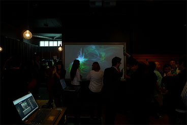

Welcome to the &some slider
This is a one of the many experiments we do just for the heck of it. Once we get it right, then we can sell it! It is made with XHTML, jQuery & CSS.
A content slider, with paralax & you can enter a start & finish colour to animate between. Pretty cool eh?
What the heck
&some are humans who share a common understanding of & excitement about the connected world. We blend commerce & art in the pursuit of the remarkable, which makes us the creative co-conspirator of choice for those who are passionate about their craft.
We conceive & build interesting things. Things like physical computing interfaces, applications (web & mobile), brand strategies, motion graphics, clever campaigns, digital strategies, interactive installations, data driven insights, infographics, projection mapping installations, live visuals, animation and other things that make people go wow.
We like working with people who are passionate, whatever they might be passionate about.
HP & Microsoft have opened a pop up shop in downtown Auckland, New Zealand. The world gets to choose how it looks at night. Simply send a tweet to @hppopshop with the colour you would like the store to be & you will be able to watch it on the live stream above; tweet either a word like red or green or if you want to nerd it up you can send a hex colour value prefixed with the '#' symbol like, #FF0000 or #CCCCCC.
Visit at www.colourme.tv to try it out.
